SOBRE HEMÁCIAS
RESUMO
As hemácias são células que compõe uma parte essencial do sangue, ela realiza a função de pegar o oxigênio dos pulmões e distribuir por todo corpo, as hemácias são responsáveis pela coloração vermelha característica do sangue. Uma célula de hemácia madura tem um formato arredondado e bicôncavo e é anucleada. A célula contém uma proteína importante, a hemoglobina, responsável em se ligar ao oxigênio para o transporte, além de carregar o dióxido de carbono, resultante do metabolismo, para ser descartado na expiração. As hemácias representam cerca de 42% a 47% da composição do sangue.
APARÊNCIA DAS HEMÁCIAS
As hemácias, como foi descrito, são células pequenas, arredondadas e bicôncavas e anucleadas. O motivo se deve a um processo evolucionário que aumenta a eficiência do transporte de oxigênio, por exemplo, a falta de núcleo significa que a própria célula não precisa utilizar muito oxigênio para sua própria manutenção, podendo carregar mais consigo, além de que seu formato bicôncavo permite com que ela carregue mais oxigênio de forma constante. Algumas doenças podem causar mudanças na forma da hemácia, prejudicando a captura e transporte de oxigênio (Ex. Anemia Falciforme e Anemia Perniciosa). As hemácias têm um diâmetro consistente de 7-8 µm. Seu formato bicôncavo, onde suas extremidades são mais espessas que o centro, aumentam a sua área de superfície e, consequentemente, a eficiência na troca e transporte de gases. Estas células não possuem organelas intracelulares (incluindo núcleo), restando como estrutura seu citoplasma e sua membrana celular. Seu citoplasma é preenchido por hemoglobina, uma proteína capaz de se ligar reversivelmente ao dióxido de carbono e ao oxigênio. A hemoglobina é acidófila, isso significa que ela tem a capacidade de corar facilmente por ação de corantes ácidos, lhe dando um vermelho intenso pela eosina (um corante usado na histologia).
ESTRUTURA DAS HEMÁCIAS
O componente mais importante da hemácia é a hemoglobina, um tetrâmero formado por quatro subunidades de polipeptídeos chamadas ‘cadeias de globina’. Há seis tipos de cadeias, alfa (α), beta (β), gama (γ), delta(δ), épsilon (ε) e zeta (ζ), presentes nos estágios embrionário, fetal e adulto, onde diferentes combinações formam diferentes hemoglobinas, destacando-se:
-
Hemoglobina A (HbA): representa 95% da hemoglobina total no sangue de um adulto saudável.
-
Hemoglobina A2 (HbA2): representa 3,5% da hemoglobina total no corpo.
-
Hemoglobina F (HbF): tipo presente no feto e nos primeiros meses de vida do bebê.
-
Hemoglobina S (HbS): hemoglobina falciforme com formato característico de foice, é pouco eficiente no transporte de gases e é a causa da anemia falciforme.
Cada subunidade de globina possui um átomo de ferro ligado a uma molécula heme. O ferro é capaz de se ligar aos gases, permitindo que cada hemoglobina se ligue a quatro moléculas de oxigênio ou dióxido de carbono. A membrana celular das hemácias são bicamadas lipídicas que contém dois tipos de proteínas, integral e periférica.
As integrais são a maioria e ocupam toda a espessura da membrana, se ligam à hemoglobina e servem de pontos de ancoragem para o citoesqueleto. As proteínas integrais os antígenos dos grupos sanguíneos ABO, cujas combinações podem originar quatro principais tipos sanguíneos: A, B, O e AB. A membrana também expressa o antígeno Rh, que define o tipo como Rh positivo se estiver presente. As proteínas periféricas se projetam no citoplasma, se localizando na superfície interna da membrana e interconectadas por filamentos intracelulares em uma rede citoesquelética que fornece elasticidade e força às hemácias.
FORMAÇÃO DAS HEMÁCIAS
A eritropoiese é o processo pelo qual são produzidos os eritrócitos na medula óssea. Este é rígidamente controlado por diversos fatores de crescimento e citocinas, sendo o principal, o hormônio eritropoetina (EPO), produzida prioritariamente pelos rins. A eritropoetina é o principal estimulador da eritropoiese atuando a partir de uma célula indiferenciada mas já orientada para linhagem eritróide, essa célula é capaz, então de responder ao estímulo da EPO na medula.Ocorrem então três divisões mitóticas sucessivas, de modo a se formarem 16 células-filhas. Os proeritroblastos são identificados como as primeiras células identificáveis, em seguida passam pelas diversas etapas de diferenciação até a formação do eritrócito maduro liberado para o sangue periférico. Em média, um adulto saudável produz meio litro de hemácias por semana através das medulas ósseas.
PRÓ-ERITROBLASTO
Nesta fase inicial da eritropoiese, as células-tronco hematopoiéticas se diferenciam em proeritroblastos. Essas células são grandes, com núcleo grande e pouco condensado. A cromatina é frouxa, e podem ser visíveis nucleolos. Podem ser notadas projeções no seu citoplasma, sendo um achado morfológico característico
 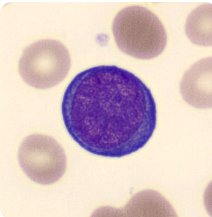
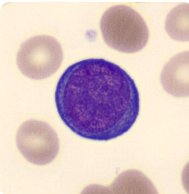

ERITROBLASTO BASOFÍLICO
Os proeritroblastos se transformam em eritroblastos basófilos. Nesta fase, o núcleo ainda é grande, mas começa a se condensar. A cromatina torna-se mais densa, e os nucléolos desaparecem gradualmente. O citoplasma começa a adquirir coloração basófila devido à síntese de hemoglobina.


ERITROBLASTO POLICROMÁTICO
Os eritroblastos basófilos se transformam em eritroblastos policromatófilos. Nesta fase, a célula diminui de tamanho, o núcleo continua a se condensar e a cromatina assume uma coloração mais densa. O citoplasma adquire uma coloração mais rosada devido à presença de hemoglobina em diferentes estágios de maturação.
 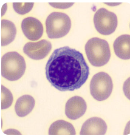
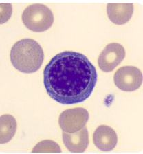
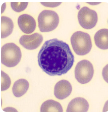
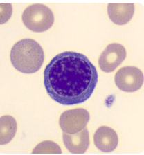
ERITROBLASTO ORTOCROMÁTICO
Os eritroblastos policromáticos se transformam em eritroblastos ortocromáticos. Nesta fase, o núcleo é pequeno, densamente condensado. O citoplasma é ricamente corado e contém grandes quantidades de hemoglobina. A maioria das vezes , esta fase é identificada graças a mesma coloração do citoplasma semelhante as hemácias em volta

 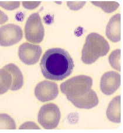
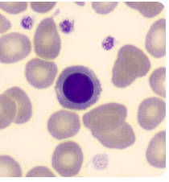
ERITRÓCITO POLICROMÁTICO
Os eritrócitos policromáticos já não apresentam o núcleo, também chamado de reticulócitos (visíveis através da coloração azul cresil brilhante) são células jovens, ainda imaturas, contêm traços de ribossomos na forma de grânulos reticulares. Os reticulócitos são então liberados na corrente sanguínea, onde amadurecem completamente em eritrócitos maduros.
 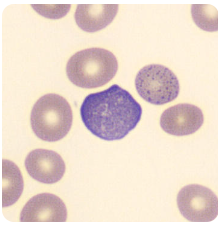
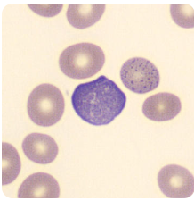

ERITRÓCITOS MADUROS
Os eritrócitos maduros são bicôncavos com um leve halo central.

 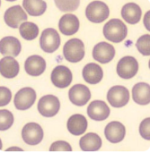
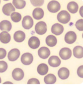
Sem núcleo, essas células não se dividem mais e, depois de cerca de 120 dias no sangue, as hemácias começam a perder sua função. Nesse momento, são reconhecidas por macrófagos, principalmente do baço, que as fagocitam e destroem. A hemoglobina é desdobrada, formando um pigmento sem ferro (bilirrubina). Ela passa para o sangue e é eliminada pelo fígado como um dos componentes da bile. O ferro proveniente desse desdobramento é transportado e armazenado na medula óssea vermelha e no fígado, para posterior utilização na síntese de outras moléculas de hemoglobina.
ANEMIA
A anemia é definida como uma síndrome caracterizada pela diminuição da massa eritrocitária total. Laboratorialmente, considera-se anemia quando a hemoglobina é menor que 12 g/dl em mulheres ou 13 g/dl em homens. Na gravidez existe uma anemia relativa por hemodiluição, além daquela causada por carência nutricional, principalmente por deficiência de ferro e ácido fólico. Durante a gestação, os valores considerados normais para a hemoglobina caem para 10 g/dl e os do hematócrito para 30%.
A anemia é uma doença que pode ter várias causas. Podendo ser causado por hemorragias constantes, produção insuficiente de hemácias na medula óssea e destruição acelerada de hemácias. No entanto, muitas vezes o número de hemácias é normal, mas cada uma delas contém pouca hemoglobina, o que também pode provocar anemia. Assim, nos exames de sangue geralmente são fornecidos dados sobre o número de hemácias e sobre a quantidade de hemoglobina. A redução da quantidade de hemoglobina pode ser decorrente de uma alimentação pobre em ferro, elemento essencial que faz parte dessa molécula. A anemia pode também ter origem hereditária, como acontece na anemia falciforme, em que as hemácias têm aspecto de foice e a função alterada. Essas hemácias têm vida mais curta e não há reposição em número suficiente pela diferenciação de células da medula óssea, causando a anemia. A forma mais comum de anemia é a ferropriva, causada pela deficiência de ferro no corpo. Sintomas incluem fadiga, dor no peito, tontura, infecções frequentes, palpitações cardíacas, dor de cabeça, palidez, zumbido pulsátil e falta de ar.